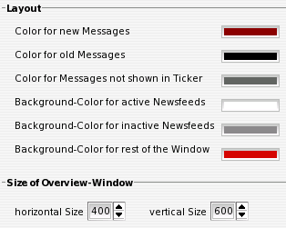

IV.VII. Overview-Window (Layout)
Layout
Hier können die Farben, welche im Übersichtsfenster zur Verdeutlichung der verschiedenen Zustände einzelner Nachrichten existieren, geändert werden.
Size of Overview-Window
Die Größe des Übersichtsfensters kann hier manuell angegeben werden. Größen-Veränderungen am Fenster selbst werden in diese Werte übernommen.